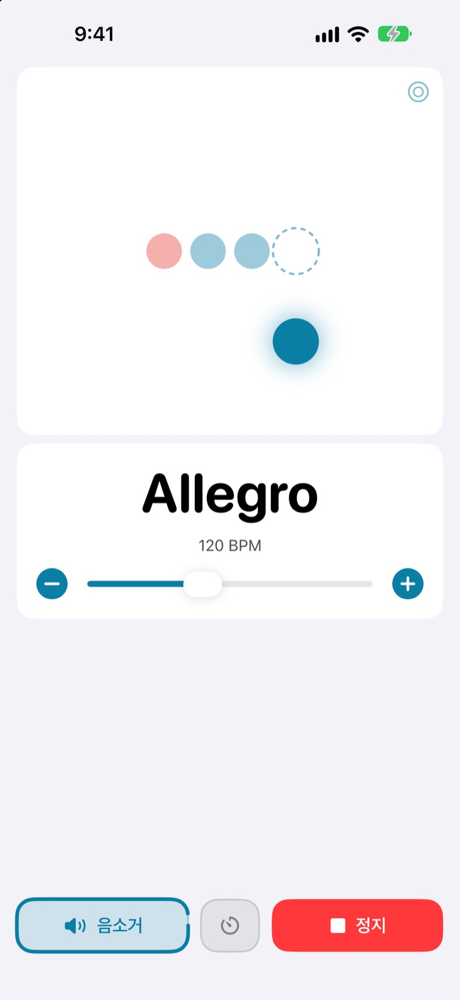
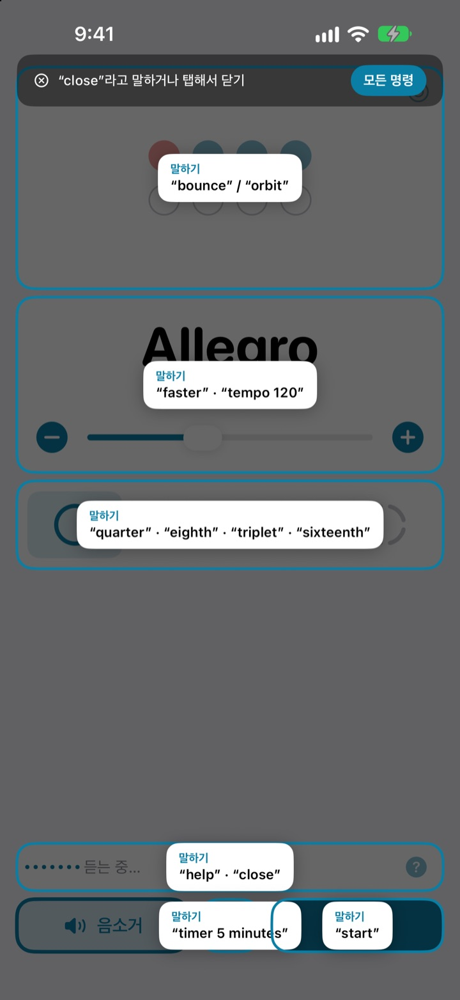
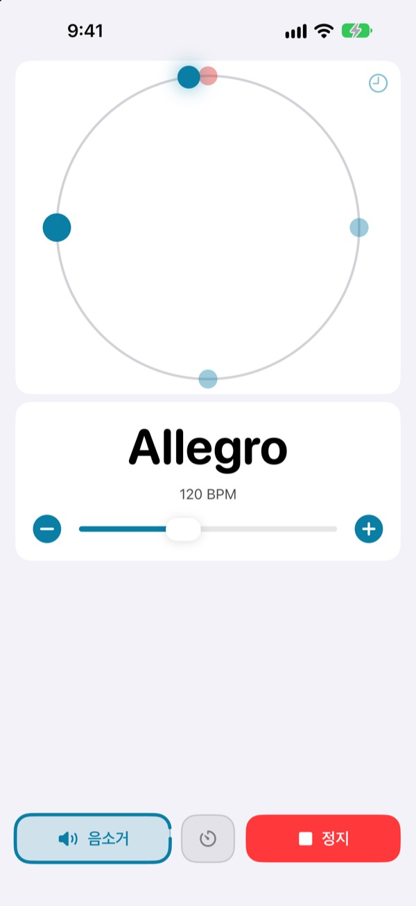
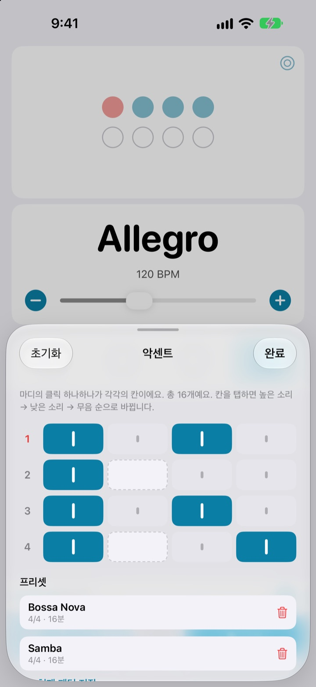

두 손은 악기에,
템포는 말로
연주하다가 faster라고 말하면 메트로놈이 빨라집니다. 템포를 바꾸려고 연주를 멈출 필요가 없습니다.
메트로놈과 음성 조작은 무료입니다.

직접 말해 보세요
버튼을 누르거나 마이크를 켜고 영어로 말해 보세요. 소리가 나니 볼륨을 확인해 주세요.
템포 하나 바꾸려다 흐름이 끊긴 적 있나요?
활을 내려놓고, 피크를 입에 물고, 화면을 두 번 누르고 나면 방금 잡은 감이 사라집니다. 낫마템포는 연주하던 자세 그대로, 말 한마디로 템포를 바꿉니다.
말하면 바로 따라옵니다
start, faster, tempo 120처럼 짧은 영어 단어로 말합니다. iOS 음성 제어나 손쉬운 사용 설정을 켤 필요 없이, 앱을 열면 바로 듣습니다.
명령이 기억나지 않으면 help라고 말하세요. 말할 수 있는 말이 화면 위에 바로 나옵니다.

박을 눈으로도 따라갑니다
튀는 공, 원 궤도, 링 세 가지 화면 중에서 고릅니다. 마디 첫 박은 빨간색으로 보이고 더 크게 울립니다.
원 궤도 화면에서 박에 맞춰 두드리면 얼마나 정확했는지 보여 줍니다.

곡마다 악센트를 저장합니다
마디 안의 클릭 하나하나를 강하게, 약하게, 소리 없이로 정하고 곡마다 프리셋으로 남겨 둡니다. 보사노바든 삼바든 한 번 만들면 다음에는 고르기만 하면 됩니다. (Pro)

시작은 세 단계면 됩니다
- 1
앱을 엽니다
열자마자 듣기가 시작됩니다.
- 2
마이크를 허용합니다
처음 한 번만 마이크와 음성 인식 권한을 묻습니다.
- 3
말하거나 누릅니다
모든 명령은 화면의 버튼으로도 할 수 있습니다.
말할 수 있는 명령
- start · stop
- 재생, 멈춤
- faster · slower
- 5 BPM씩 올리기, 내리기
- up · down
- 1 BPM씩 올리기, 내리기
- tempo 120
- 원하는 템포로 바로 맞추기
- double · half
- 두 배, 절반
- three beats
- 박자 바꾸기
- quarter · eighth · triplet · sixteenth
- 4분, 8분, 셋잇단, 16분으로 나누기
- louder · quieter · mute
- 클릭 소리 크게, 작게, 끄기
- volume 60
- 음량을 퍼센트로 맞추기
- bounce · orbit
- 박 표시 화면 바꾸기
- timer 5 minutes
- 연습 타이머 맞추기
- practice
- 연습하는 동안 템포를 조금씩 올리기 (Pro)
- tune
- 튜너 열기 (Pro)
- help
- 명령 목록 보기
- close · done
- 열린 화면 닫기
음성 인식은 영어(미국)로 동작해서 명령은 영어 단어로 말합니다. 앱 화면은 한국어로 나옵니다.
메트로놈은 무료, 더 필요하면 Pro
무료
- 음성 조작 전부
- 1박부터 8박까지, 첫 박 강조
- 4분, 8분, 셋잇단, 16분 나누기
- 튀는 공, 원 궤도, 링 세 가지 화면
- 탭 템포와 타이밍 체크
- 연습 타이머
Not My Tempo Pro
- 연습 모드: 몇 마디마다 템포를 올려 목표 속도까지
- 악센트 에디터와 곡별 프리셋
- 크로매틱 튜너
무료 체험이 있는 연간 구독, 또는 한 번 결제로 평생 이용
음성 조작과 접근성 기능은 앞으로도 누구에게나 무료입니다. Pro가 생기기 전에 앱을 사셨다면 Pro 기능을 이미 모두 쓰실 수 있습니다.
자주 묻는 질문
한국어로 말해도 되나요?
음성 인식이 영어(미국)로 동작해서 명령은 start, faster 같은 영어 단어로 말합니다. 명령이 짧은 단어라 금방 익숙해지고, 모든 명령은 버튼으로도 할 수 있습니다.
제 말을 못 알아들어요.
마이크 상태가 Listening으로 표시되는지 확인해 주세요. 꺼져 있다면 Listen을 누르면 됩니다. 시끄러운 곳이나 스피커로 크게 틀 때는 이어폰을 쓰면 클릭 소리가 마이크로 새지 않아 훨씬 잘 알아듣습니다.
듣기가 저절로 꺼졌어요.
배터리를 아끼려고 몇 분 동안 명령이 없으면 듣기가 꺼집니다. Listen을 누르면 다시 켜집니다.
템포가 절반이나 두 배로 잡혀요.
double이나 half라고 말하면 바로 고쳐집니다.
튜너는 어떻게 쓰나요?
tune이라고 말하거나 템포 카드의 파형 버튼을 누릅니다. 음을 하나 연주해서 표시가 초록색 구간에 들어오면 음이 맞은 것입니다. 나갈 때는 close라고 말하세요.
iOS 음성 제어를 쓰고 있어요.
앱의 마이크를 끄고 버튼 이름으로 조작하면 됩니다. 버튼마다 VoiceOver 이름이 붙어 있습니다.
제 목소리가 어딘가로 보내지나요?
아니요. 음성은 기기 안에서 알아듣고, 녹음하거나 저장하거나 보내지 않습니다. 메트로놈, 음성 조작, 튜너는 인터넷 없이도 동작합니다.
구독은 어떻게 해지하나요?
설정 앱의 Apple 계정 > 구독에서 해지할 수 있습니다. 현재 기간이 끝나기 24시간 전까지 해지하지 않으면 자동으로 갱신됩니다. 평생 이용권은 한 번만 결제합니다.
궁금한 점이나 의견은 leeo@kakao.com로 보내 주세요.